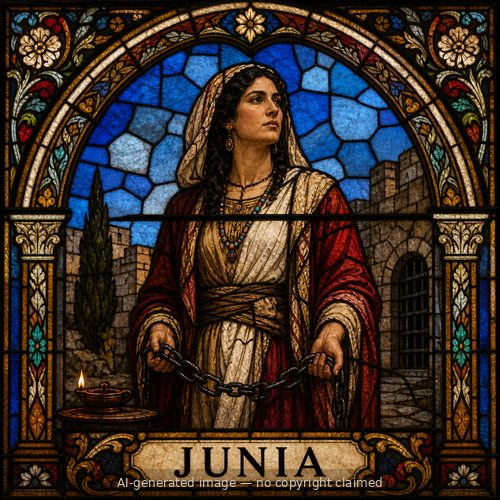

Junia — stained-glass style portrait
Junia (M)
First named in Romans 16:7
Junia appears in a single verse, among Paul's long list of personal greetings closing his letter to the Romans: 'Greet Andronicus and Junia, my kinsmen and my fellow prisoners, who are outstanding among the apostles, who also were in Christ before me' (Romans 16:7). Three details stand out. First, Junia and Andronicus shared a period of actual imprisonment alongside Paul at some unspecified point in his ministry, a level of costly partnership in the gospel Paul does not attribute to many people he names. Second, Paul says they were 'in Christ before me' -- meaning Junia's conversion predated Paul's own well-known encounter on the road to Damascus, making her one of the earliest believers named anywhere in the New Testament. Third, and most debated, Paul calls the pair 'outstanding among the apostles,' language early church commentators overwhelmingly read as including Junia within some understanding of apostleship, whether in the broader New Testament sense of a commissioned messenger of the gospel (as with Barnabas or the unnamed 'apostles of the churches' in 2 Corinthians 8:23) rather than the narrower sense limited to the original Twelve. The Greek name itself is grammatically identical whether read as the feminine Junia or masculine Junias, a genuine and long-running textual and historical debate, though the earliest interpreters understood it as a woman's name. Whichever reading is correct, Paul's brief but pointed commendation marks Junia as a believer of unusually high standing and sacrifice in the earliest years of the church.
Thought for Today
Junia believed in Christ before Paul did and was later imprisoned for the gospel alongside him. May we count faithfulness to Jesus worth whatever cost it brings.
References: Romans 16:7
Genealogy
Father
—Mother
—Spouse(s)
—Children
—New Testament Church
- Rome — "outstanding among the apostles," a fellow prisoner of Paul's, in Christ before him
Romans 16:7